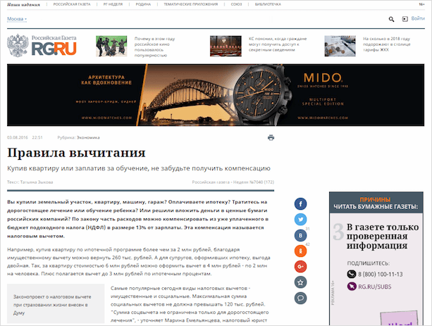
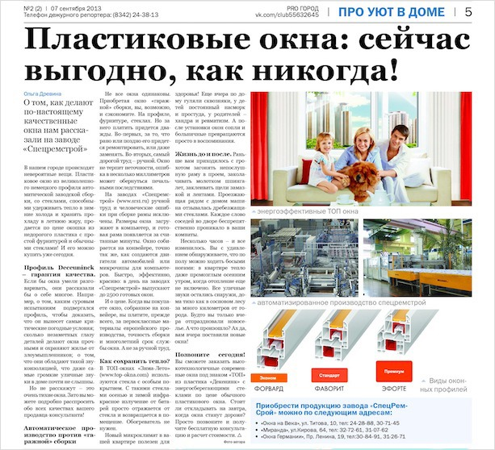

Общие признаки
Толковый словарь С. И. Ожегова даёт следующее определение:
Статья — это научное или публицистическое сочинение небольшого размера. Газетная, журнальная с. Критическая с.
В более позднем источнике — толковом словаре Т. Ф. Ефремовой — ко всему прочему добавляется научно-популярный жанр.
В настоящее время также можно выделить рекламную статью. У популярных веб-публикаций есть свои особенности, о которых скажем несколько позже, но в целом они дублируют устоявшуюся систему жанров.
Оговоримся сразу, что поведём речь об авторских, т. е. написанных преимущественно одним человеком (не считая правок), статьях. (Им в противовес существуют коллективные, чаще всего используемые в науке (при создании справочников, словарей, энциклопедий)). Материал, создаваемый одним автором, в большей степени сохраняет целевое, тематическое и стилевое единство. Именно этим он и интересен.
Цель статьи — довести до сознания читателя определённые факты, положения, суждения либо чьё-либо мнение о них.
Целевые установки задают следующие признаки:
- небольшой размер;
- как правило, один предмет исследования;
- информационный, разъяснительный, аналитический или критический характер;
- рассуждение как определяющий тип текста;
- объективизация повествования (может быть нарочито нарушена в рекламе или блоге).
Это наиболее общие черты. Каждый жанр статьи имеет свои характерные особенности.
Виды статей в журналистике и требования к их содержанию
Классификация статей в публицистике далеко не однозначна. Даже само понятие “статья” в одних источниках выделяется как общее, в других — как частное.
Рассматривая этот термин как общее наименование (вслед за Ожеговым), большинство учёных делит статьи в журналистике на следующие группы (по цели написания и документальному наполнению):
- информационные;
- аналитические (проблемные, рецензии, обзорные; некоторые сюда же причисляют и научно-популярные)
- художественно-публицистические (где важнее не само событие, а его описание и мнение автора о нём — очерк, фельетон, памфлет).
Несколько неустойчиво положение интервью в этой классификации: оно может быть создано с различной целью, следовательно, относиться к любому разделу.
Также возникает вопрос: куда отнести рекламу? По-видимому, придётся для сего жанра утверждать четвёртый пункт.
Публицистическая статья, как никакая другая, призвана анализировать самые значимые факты и проблемы действительности, получать масштабные выводы. А потому ясная авторская позиция и идейная выдержанность обязательны.
Присущи ей также следующие особенности:
- В качестве предмета изображения может быть взято почти любое явление действительности, имеющее значение для человека.
- Факты для статьи подбираются как из окружающего мира, так и из личного опыта пишущего.
- Цель написания — разъяснение явления, выявление причин и следствий, анализ или критическое рассмотрение чего-либо, а также воздействие на читателя.
- Тип текста — рассуждение с присущим ему комплексом положений, доказательств и выводов.
- Построение текста логическое, с использованием чётких и однозначных формулировок.
- Характерно использование научной, общественно-политической и иной терминологии.
Новостная статья
Новостная статья отличается от сестёр предельной краткостью, чёткостью и насыщенностью. Она призвана дать максимально ёмкие ответы на вопросы: что, где, когда, почему произошло и кто ответственен за эти события.
Главной ценностью жанра является актуальность, истинность и объективность. Адресат получает сведения быстро, воспринимает и осмысляет их в течение короткого времени, после чего, в большинстве случаев, переходит к другим новостям.
Заинтересовавшись проблемой, читатель может обратиться за более подробной информацией, которая раскрывается шире в репортажной и обзорной статьях.
Информационная статья
Информационную статью пришлось поместить в классификацию самостоятельно, ибо места ей там не нашлось, в то время как это достаточно распространённый жанр.
Сюда можно отнести как повествование о важном событии прошлого и настоящего, так и разъяснения законов, полезные советы и пошаговые инструкции. Пример текста — инструкция по получению налогового вычета в “Российской газете”, а также многочисленные описания изготовления чего-либо — от варки каши до постройки дома.
Информационные статьи делятся на повествовательные и описательные. Целью их является ознакомление читателя с явлениями жизни, разъяснение каких-либо деталей. Обращаясь к такого рода текстам, читатель хочет получить ответ на вопросы “что такое” и “как сделать”. Демонстрация точки зрения автора, равно как и полемика, тут неуместна, однако отсылка к личному опыту в инструкции допустима.
Главное требование к информационной статье — её информативность, т. е. содержательность и насыщенность информацией. По-настоящему информативный контент полностью раскрывает суть означенной проблемы, содержит исчерпывающие ответы на вопросы читателя и не допускает “воды”
Обзорная статья
Обзорная статья может быть написана на разные темы — от оценки состояния современной науки, искусства и прочего до сравнительной характеристики развития разных отраслей экономики и даже отдельных групп товаров.
Главная её особенность — широта и детальность рассмотрения, глубина анализа фактов, объективность изложения материала.
Рекламная статья
Текст, созданный с целью продвижения товара или услуги, попадает под определение рекламной статьи. С ними мы сталкиваемся регулярно и повсеместно. Ещё бы, ведь размещение рекламы партнёров является ощутимой статьёй дохода многих источников информации.
Рекламная статья — это не всегда продающий текст, призванный заставить читателя в течение минуты после прочтения заказать товар. Реклама, размещённая в печатном издании, может иметь более лояльный характер: сначала она вызовет интерес к продукту, потом заставит задуматься о его необходимости, затем подскажет нужного производителя и объяснит его конкурентные преимущества, а на заключительном этапе подтолкнёт читателя к двери магазина. Предоставляя потребителю отсрочку, маркетолог рассчитывает на его большее доверие.
Свалившись на головы россиян в 1990-х, реклама использовала все средства для достижения цели и больше радовала яркостью, чем корректностью. Но кричащие лозунги, глупые образы и нелепые неологизмы более характерны для телевидения, ограниченного временными рамками трансляции, чем для прессы, которую аудитория может перечитывать. Стиль рекламной статьи ни в коем случае не будет вызывать отторжения, иначе читатель просто перелистнёт страницу.
Самым эффективным способом удержания внимания и пробуждения интереса аудитории является нативная рекламная статья — это та самая скрытая реклама, проглотив которую, потребитель не замечает, что съел не то, что хотел, а нужные вещества, как при эффекте 25-го кадра, в организме у него отложились.
Нативная реклама нередко маскируется под обычную аналитическую статью (исследование пользы тех или иных методов лечения или сравнение различных продуктов), повествование о жизни (история успеха некоего персонажа).
Создаётся такой контент с целью незаметного привлечения интереса к товару, повышения имиджа производителя (массовое сознание, закалённое эпохой 90-х, отождествляет навязчивую рекламу товара с его плохим качеством) и уровня доверия к нему.